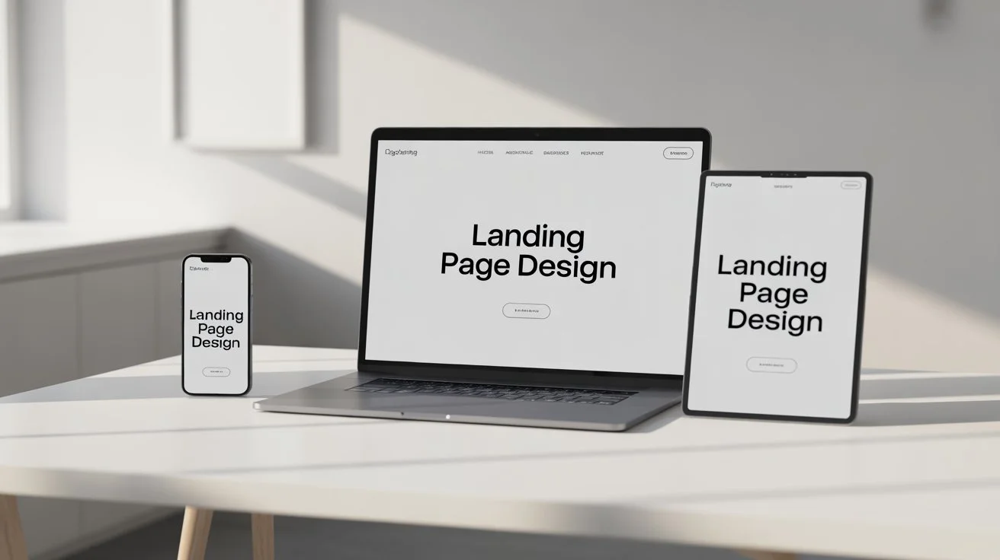

Il Design Minimalista nel 2025
Esploriamo le tendenze del design minimalista e come implementarle nei tuoi progetti.
Leggi di piùEsplora articoli su design, sviluppo web e creatività digitale.
Esploriamo le tendenze del design minimalista e come implementarle nei tuoi progetti.
Leggi di più
Come il copywriting influenza l'esperienza utente e migliora la conversione.
Leggi di più
Guide pratiche per creare layout responsive che funzionano su tutti i dispositivi.
Leggi di più